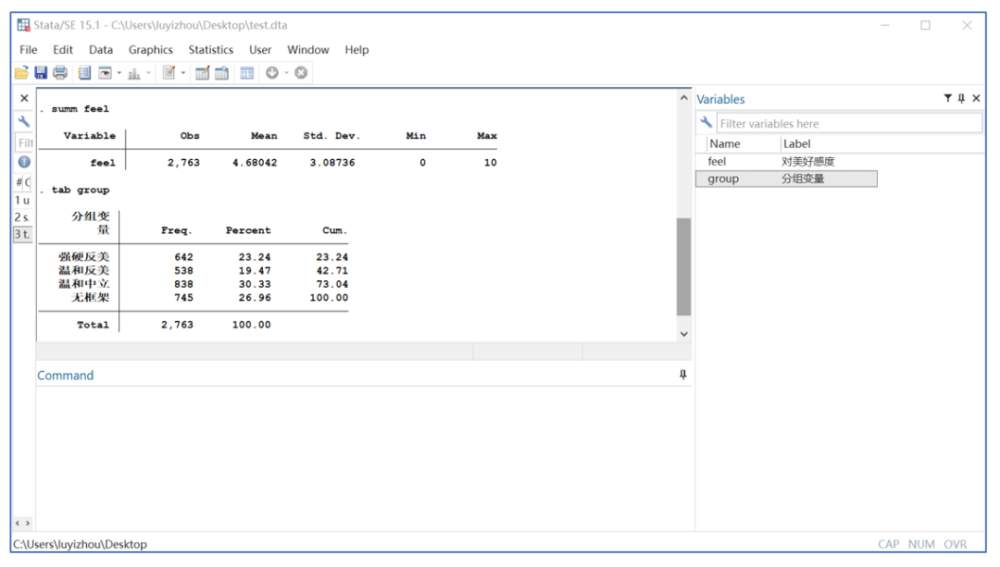
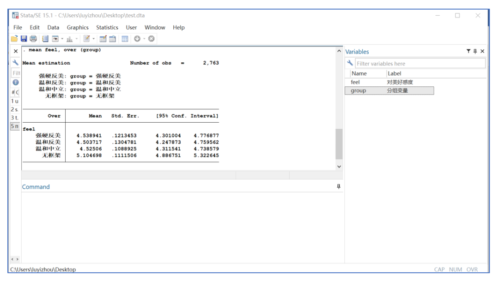
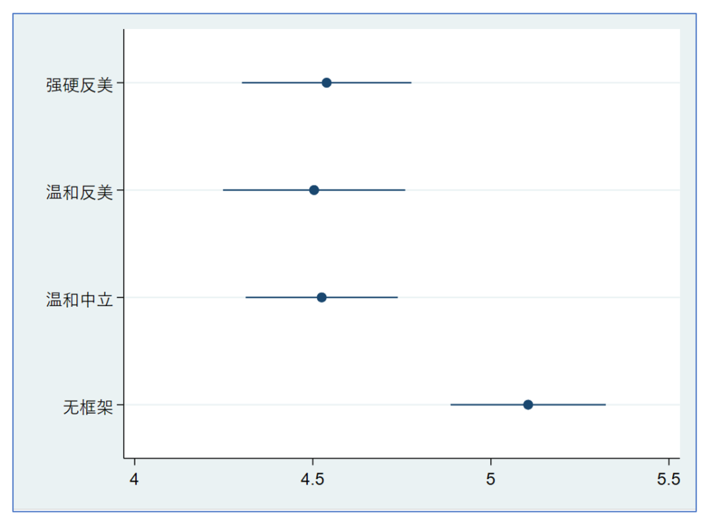
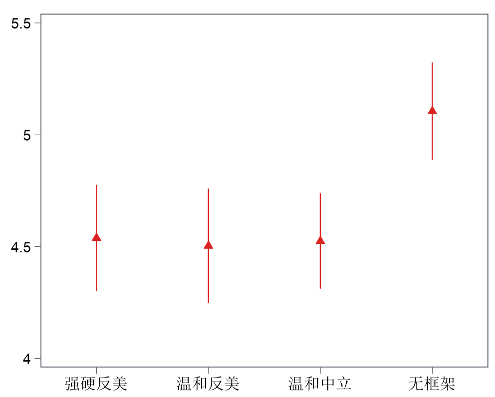
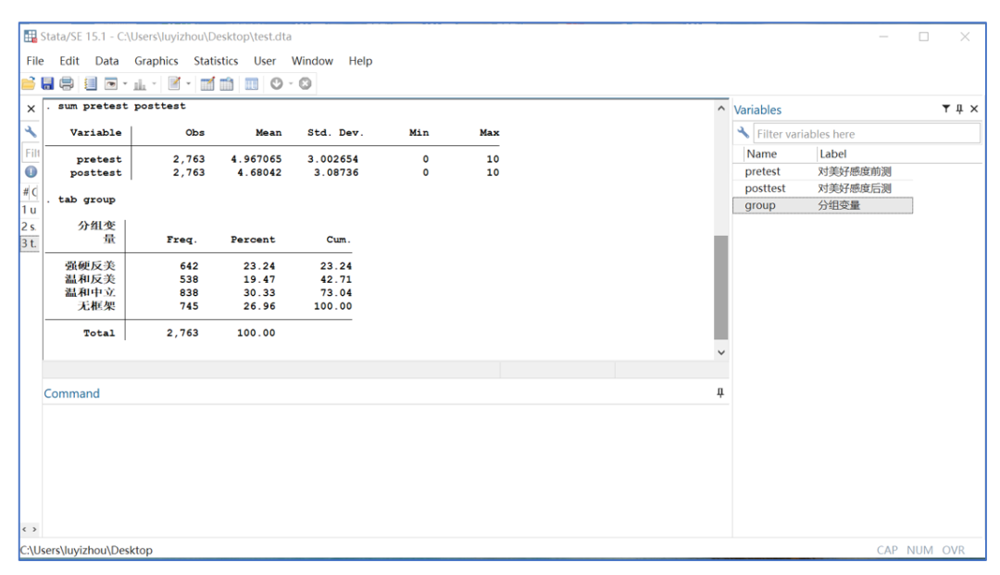
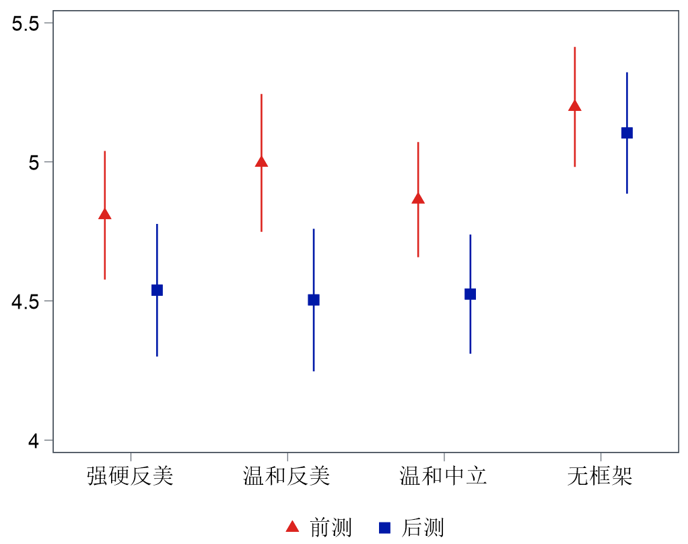
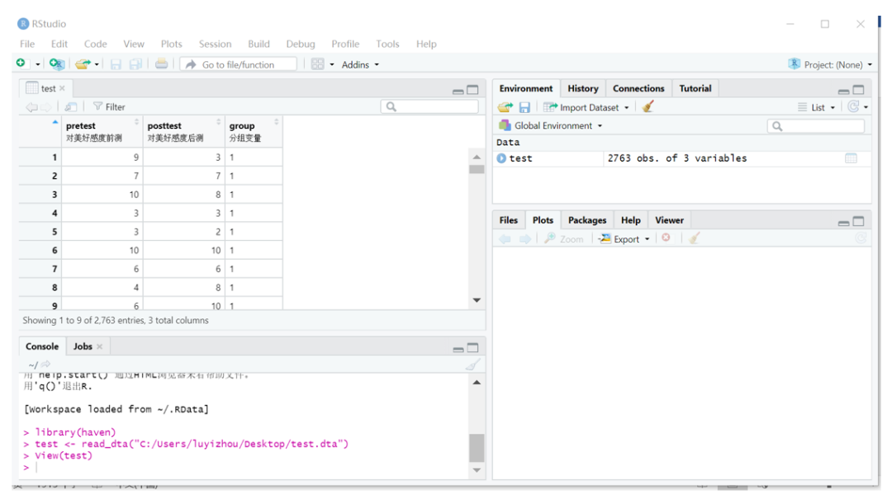
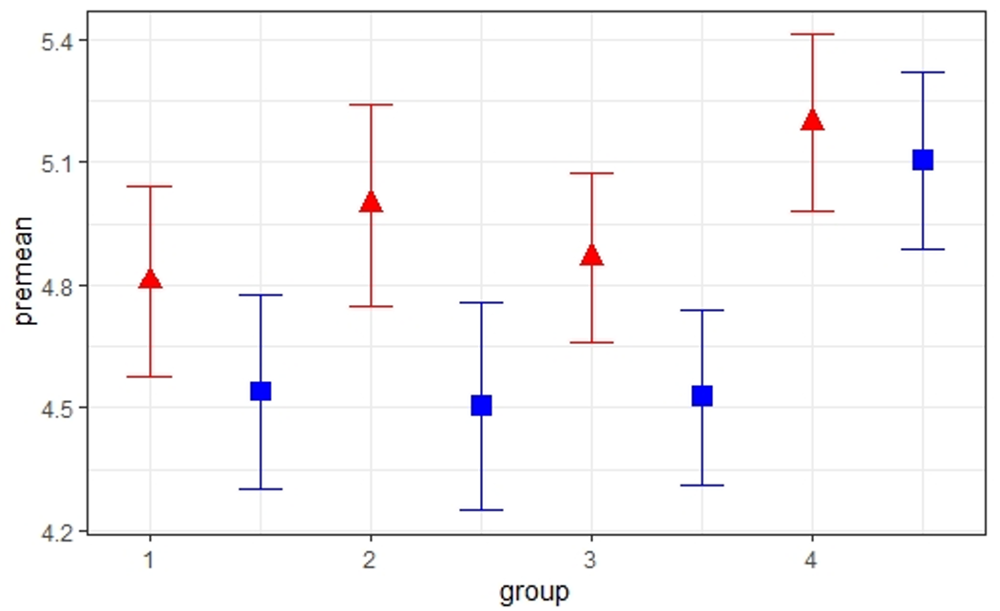

收录于合集
#数据可视化 15 个
#实用技术 19 个
长期以来，Stata都被视为一款中规中矩的“中阶”统计应用。一方面，Stata内置了能够满足大多数统计要求的算法，控制界面的友好程度也能够接受。因此很多初学者都能平滑地完成从Excel/SPSS到Stata的“进阶”过程。但另一方面，Stata在一些领域的发展已经明显落后于实际应用的前沿，譬如对多个数据集的同时处理（直到16版本才出现了Multitask的飞越），以及本文将要探讨的、被无数用户吐槽的“又丑又慢”的可视化功能。当然，Stata具有一定的开源性，因此又有很多外部包可以补足Stata在可视化方面的短板，甚至出现了将ggplot2移植到Stata平台的“邪教”。
好了，本文的吐槽就到此为止，下面来看看今天要探讨的具体议题——社会科学实验的可视化。社会科学实验主要包括实验室实验、实地实验和问卷实验三种，它们的共性也即它们和观察性研究的区别就在于，研究中变量的"变异"是受到人为处理的结果。一般来说，最简单的实验研究产生的数据集只有两个核心变量，一个记录因不同处理的分组情况（处理- 控制的虚拟变量或不同处理组和控制组的多分类变量），另一个则记录实验结果（理论上是连续变量）。这种简单的实验被称为被试间设计。顾名思义，实验结果是通过不同处理下不同被试之间的差异来呈现的。显然，将这种实验结果可视化的思路也非常简单，就是展示不同组别的平均值和标准误/置信区间。肉眼可见的组间差异可以很有力地向读者传达实验成功的信息，当然，更为严谨的统计检验也是必不可少的。
下面我们来看一个具体的案例。在《复杂舆论议题中的媒体框架效应》一文中，马得勇教授等人在问卷调查中设置了四个情境。在随机分组后，被试有可能会阅读到"强硬反美"、“温和反美"和"温和中立"这三种媒体框架之一，也有可能被分配进入没有阅读材料的控制组。因此，这里记录不同处理分组的就是一个四分类变量。在人为处理后，问卷通过一系列问题记录了被试的对美好感度、对贸易战的强硬程度和对中国政府的信任程度。这些结果变量在理论上都是连续的。
假设现在作者的可视化任务就是展示四个组别的在对美好感度上的均值和标准误/置信区间，那么怎样高效准确地实现目标？事实上，在Stata中只需要两行命令就能实现可视化，下图使用Stata15.1版本演示。
首先看一下两个核心变量的情况。

然后计算各组的均值和标准误/置信区间。

最后使用大杀器，输入“coefplot”命令，各组的均值和置信区间就自动弹了出来。

从图中我们可以明显地看到，控制组（无框架）被试的对美好感度明显高于三个处理组（强硬反美、温和反美、温和中立）。这初步说明实验成功了（再次强调严谨的统计检验必不可少）。
当然Stata自动给出的图像还是那么一言难尽，下面我们手动加入“一点”细节。最重要的是把图像横竖翻转，更方便读者理解。此时的语句为“coefplot, vertical”。然后我们再找一个好看的Scheme，再修饰一下图标和颜色。下面我们就得到了…

是不是不敢相信这是来自Stata的作品呢？
下面再探讨一下稍微进阶一点的实验设计和相应的可视化方法。简单的被试间设计依赖于一个非常强的前提假设——被试是真的被完全随机地分组。如果被试分组的随机性被证伪（或者无法证明），那么整个实验结果就会化为泡影。证明随机性的方法有多种，这里介绍最简单的一种，即前测- 后测设计。同样举上文的例子，作者可以在随机分组之前就先测量一次被试的对美好感度，在分组- 处理后再测量一次被试的对美好感度。这就实现了兼具被试内设计（前后比较）和被试间设计（组别差异）的实验方法。这种实验设计的另一个好处是可以直观地反映被试在人为处理前后的变化。在理想的情况下，处理组和控制组被试在前测上差异不大，处理组被试在处理前后变化较大，控制组被试在处理前后变化不大。
那么如何将上述结果可视化呢。下面进入实战环节，首先我们获得了一个升级版的数据库，这里有对美好感度前测、对美好感度后测和分组这三个核心变量。其中，前测和后测都是连续变量，分组仍然是四分类变量。

下面直接贴出核心代码
mean pretest, over(group)est sto Premean posttest, over(group)est sto Postcoefplot (Pre,label(前测)) (Post, label(后测)),vertical
同样加入“一点”细节，我们就可以得到…

这幅图较好地传递了我们理想中的信息：三个处理组和控制组被试在前测上差异不大，三个处理组被试在处理前后变化较大，控制组被试在处理前后变化不大。当然，Stata还可以实现更为复杂的实验结果可视化，这就留待读者自己去探索了。
值得注意的上，上述可视化流程很好地反映了Stata“一张表到头”的设计理念。这样虽然快捷，但其中间步骤并没有被保存，因而很可能被使用者忽视。此外，显而易见Stata可视化的自由度并不高。作为对照，下面我们来看看，在以处理多数据集和自由可视化著称的R语言中如何实现上述任务。必须说明的是，R语言中有很多的包可以直接实现可视化目的，但为了展现中间步骤，下面将只依赖传统的tidyverse包集群。
首先我们用RStudio读取数据。

下面我们在R中定义标准误函数，计算前测和后测的均值与标准误：
standard_error <- function(x) sd(x) / sqrt(length(x))
然后汇总各组的均值和标准误：
test.1 <-group_by(test,group)test.2 <- summarise(test.1,premean = mean(pretest),postmean = mean(posttest),prese = standard_error(pretest),postse = standard_error(posttest))
最后使用无所不能的ggplot2
ggplot(test.2) + geom_point(aes(x = group,y = premean),color = "red",shape = 17,size = 3.5)+ geom_point(aes(x = group+0.5, y = postmean), color = "blue",shape = 15,size = 3.5) + geom_errorbar(aes(x = group, ymin = premean - 1.96*prese, ymax = premean + 1.96*prese), width = 0.2, color = "red") + geom_errorbar(aes(x = group + 0.5,ymin = postmean - 1.96*postse, ymax = postmean + 1.96*postse), width = 0.2,color = "blue")+ theme_bw()

至此，我们大致实现了和Stata一样的效果。当然，如果要让R自动生成前测和后测的图例，我们需要通过更为复杂的操作将原数据集堆叠起来。这里同样留待读者朋友自行探索。
最后，我们将本文的相关数据（dta格式）都存入网盘，感兴趣的读者朋友可以点击“ 阅读原文 ”进行下载（提取码为qytv）。
注：
由中国人民大学马得勇教授主持的中国网民社会心态调查（2012-2017）已全部公布，详见“中国学术调查数据资料库”（http://cnsda.ruc.edu.cn/index.php?r=projects/view&id=69084413）
参考文献：
1.马得勇,陆屹洲.复杂舆论议题中的媒体框架效应——以中美贸易争端为案例的实验研究[J].国际新闻界,2020,42(05):99-120.
2.Jann B., Plotting regression coefficients and other estimates. The Stata Journal. Vol.14.No.4(2014), pp.708-737.
撰文：陆屹洲 审读：杨端程 编辑：康张城
【政文观止Poliview】系头条号签约作者